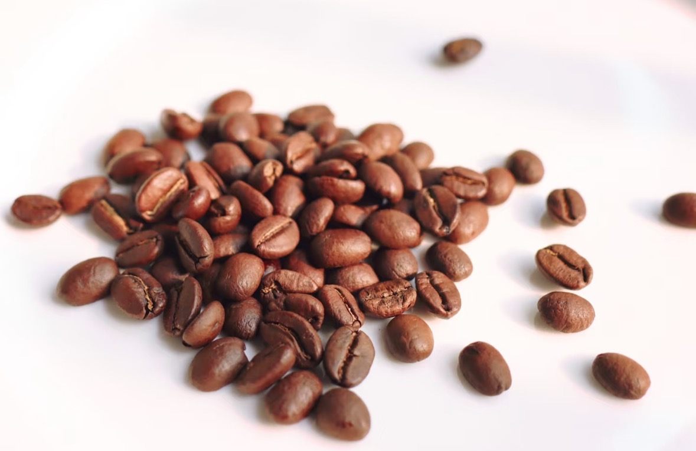
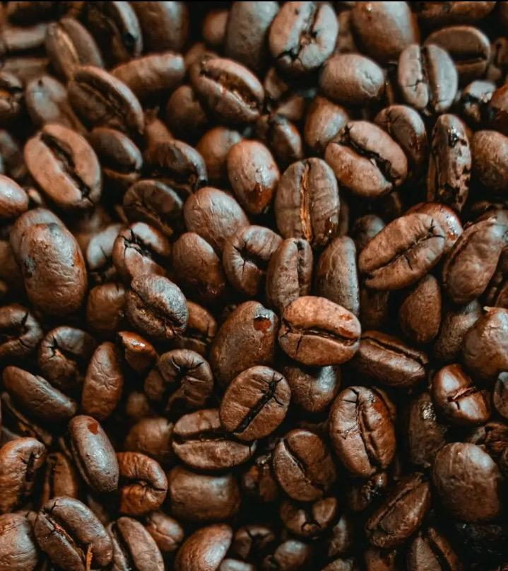
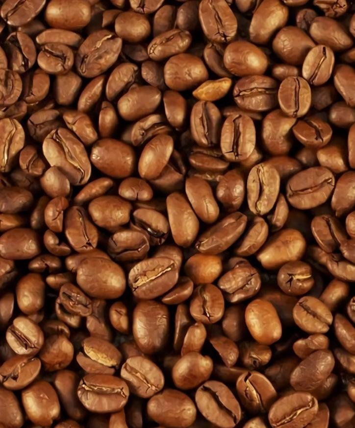
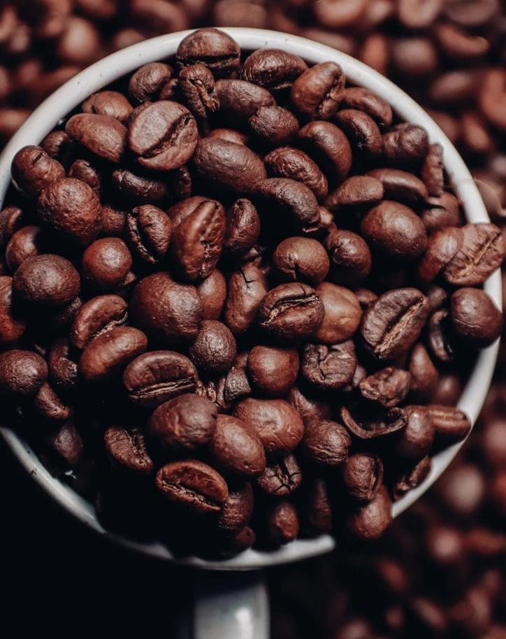

意式咖啡豆选用指南：拼配、SOE与单一产地拼配
意式咖啡的风味，除了制作工艺，咖啡豆的选择同样至关重要。目前，意式咖啡豆主要有三种形式：意式拼配、单一产地浓缩（SOE）和新兴的单一产地拼配。了解它们的特点，能帮助你选择最适合的咖啡豆，制作出理想的意式咖啡。
当前意式咖啡主要三种形式
- 意式拼配（Espresso Blend）
- SOE （Single Origin Espresso）- 单一产地浓缩
- 单一产地拼配（Single Origin Blend）
最主流的还是前两个说法，单一产地拼配是市面上一个新的拼配思路。
意式拼配（Espresso Blend）
意式拼配是意式咖啡制作的传统用豆。它通常通过两种或以上不同产地、不同处理法的咖啡豆按一定比例进行混合而成，旨在更好地凸显或平衡某一种或多种风味，从而带来更丰富的口感与层次。
拼配原因
- ①咖啡烘焙店的个性展现：通过独特的拼配方案，形成自家招牌风味。
- ②风味变化万千，发挥1+1>2：不同豆子的组合能创造出单一豆无法达到的复杂风味。
- ③降低咖啡豆成本：合理搭配不同成本的咖啡豆，平衡风味与价格。
拼配分类
- ①生拼（Pre-roast Blend）：
生豆直接混合后进行烘焙。由于不同产地、处理法、海拔等因素导致生豆的密度、含水率、水活性不一样，生豆在炉内吸热的能力不同，会导致豆子烘焙度不一致。生豆拼配考验烘焙师的生豆选择能力和烘焙能力。
- ②熟拼（Post-roast Blend）：
使用烘焙好的熟豆按照一定比例进行拼配。可根据不同豆子的特性，进行针对性的烘焙，可以得到你想要的烘焙度甚至风味走向。缺点是耗时，需要根据配方中用豆数量烘焙多炉，最后再混合。
常用组合
- 厚重口感：哥伦比亚、曼特宁、巴西或曼特宁、巴西。
- 甜感高，水果香气：埃塞俄比亚西达摩、巴西、危地马拉。
- 保证油脂丰富，干净、醇厚度高：哥伦比亚、巴西、云南。
- 中度烘焙的典范：埃塞俄比亚、哥伦比亚。
- 复杂的中深度烘焙：哥伦比亚、哥斯达黎加、危地马拉、巴西。
- 香草、奶油的独特风味：洪都拉斯雪莉、巴西或危地马拉。
SOE 单一产地浓缩咖啡（Single Origin Espresso）
SOE 是 Single Origin Espresso 的缩写，指的是单一产地的浓缩咖啡。它选用同一产地、处理方式、批次的精品咖啡豆，并将其烘焙成适合意式咖啡机萃取的烘焙度，专门用于制作意式咖啡。
优势与不足
- 优势：根据不同豆子，展现出的风味完全不同，例如埃塞俄比亚的豆子能体现出非常好的香气与水果酸质，尾段余韵甜感比较高，风味更纯粹。
- 劣势：油脂相对较薄，易消散，整体醇厚度（Body）可能较薄，不够扎实。且因豆子本身品质较高，成本会比意式拼配豆高。
单一产地拼配
近来流行起一种新意式拼配思路——单一产地拼配。即在同一个产区、甚至同一个庄园或处理站内，对不同处理方式的豆子进行拼配。
比如，耶加雪菲的日晒豆＋耶加雪菲的水洗豆，或者耶加雪菲的水洗豆＋西达摩的日晒豆等等。
这种豆子的特点概括来说就是“平衡”。这种平衡比传统拼配方式更均衡，主要原因在于同一产地的风土、雨水、海拔等环境条件大差不差，所以在本身的风味上区别不大，更容易达到和谐的平衡感。
选择合适的咖啡豆，是制作一杯美味意式咖啡的关键一步。无论是追求风味平衡的拼配，还是突出单一风味的SOE，亦或是兼顾二者的单一产地拼配，都能为你的咖啡体验带来不同的惊喜。